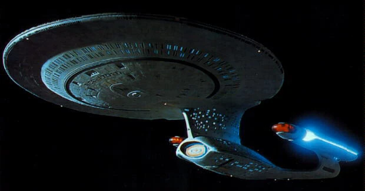
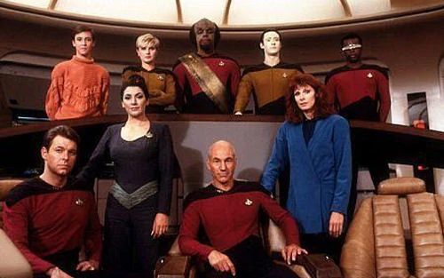

Star Trek: La Nueva Generación
| Star Trek: The Next Generation | |
|---|---|
| Abreviatura | TNG |
| Creadores | Gene Roddenberry |
| Estudio | Paramount Pictures |
| Fechas de producción | 1987 - 1994 |
| Periodo de emisión | 28 Septiembre 1987 - 23 Mayo 1994 |
| Episodios | 176 (7 temporadas), 2 episodios son largos |
| Fragmento temporal | 2364 - 2370 |
|  | |
|
La nave estelar USS Enterprise (NCC-1701-D) |
|
|  | |
|
La tripulación en la Primera Temporada. |
|
| Sumario |
|---|
| 1. Historia |
| 2. Personajes |
| 3. Créditos iniciales |
| 4. Equipo de producción |
Historia
Es el siglo XXIV, cerca de 80 años después de los tiempos del capitán James T. Kirk. La quinta versión de la
nave estelar Enterprise, la más grande y sofisticada de la Flota Estelar, está a punto de iniciar su misión exploratoria.
Como está programado el viaje para aproximadamente 10 años, la nave no sólo lleva a los oficiales de la Flota, sino también
a sus familias, para un total de más de 1.000 personas a bordo. Como es de esperar, el Enterprise ha tenido varios adelantos
tecnológicos desde su mítico antecesor, el NCC-1701. Pero como aquel Enterprise, el nuevo es una nave de exploración, pero
capaz de defenderse y de defender los intereses de la Federación Unida de Planetas cuando esta lo requiera.
Durante los últimos 80 años, desde los comienzos de la Enterprise original, la Federación ha crecido significativamente,
incluyendo ahora muchos nuevos planetas-miembro. El cambio político más importante es el tratado que firmó la Federación con
el Imperio Klingon que llevó a la paz entre ambos mundos. Sin embargo, los Klingons no son miembros de la Federación, pero
son aliados importantes.
Pero no todas son buenas noticias. Siguen existiendo otras culturas amenazadoras de la seguridad en el cuadrante, como Romulanos,
Cardassianos y Ferengis. Y pronto aparecerá un peligro mucho mayor y más poderoso que el resto: los Borg, una raza mitad
humanoide-mitad máquina, con el único objetivo de asimilar cualquier civilización que encuentren en su camino. Y la Federación
parece estar en su camino...
Personajes
- Capitán Jean-Luc Picard -- Patrick Stewart
- Primer Oficial William Riker -- Jonathan Frakes
- Oficial Científico Data -- Brent Spiner
- Dra. Beverly Crusher -- Gates McFadden
- Consejera Deanna Troi -- Marina Sirtis
- Jefe de Ingeniería Geordi LaForge -- LeVar Burton
- Jefe de Seguridad Worf -- Michael Dorn
- Jefe de Transportadores Miles O'Brien -- Colm Meaney
- Jefe de Seguridad Tasha Yar (sólo 1ra temporada) -- Denise Crosby
- Dra. Katherine Pulaski (sólo 2da temporada) -- Diana Muldaur
- Alferez Wesley Crusher -- Wil Wheaton
- Guinan -- Whoopi Goldberg
Créditos iniciales
La voz en off de Patrick Stewart (Picard) durante los créditos iniciales de cada episodio narra un mensaje similar al de
Star Trek: la serie original, pero la expresión «…su misión de cinco años…» fue reemplazada por «…su continua misión…», y el masculino «donde
ningún hombre» («no man»), por el neutro «nadie» («no one»):
- El espacio, la frontera final. Estos son los viajes de la nave espacial Enterprise. Su continua misión: explorar extraños nuevos mundos, buscar nuevas formas de vida y nuevas civilizaciones, viajando temerariamente a donde nadie ha llegado antes (Hispanoamérica).
- El espacio, la última frontera. Estos son los viajes de la nave estelar Enterprise, que continúa su misión de exploración de mundos desconocidos, descubrimiento de nuevas vidas y de nuevas civilizaciones; hasta alcanzar lugares donde nadie ha podido llegar (España).
Equipo de producción
- Gene Roddenberry - Creador, Productor Ejecutivo y Productor
- Michael Piller - Productor Ejecutivo y Escritor
- Rick Berman - Productor Ejecutivo y Escritor
- Jeri Taylor - Productora Ejecutiva y Escritora
- Maurice Hurley - Coproductor Ejecutivo y Escritor
- Ronald D. Moore - Productor y Escritor
- Brannon Braga - Coproductor y Escritor
- Joe Menosky - Coproductor y Escritor
- René Echevarria - Editor Ejecutivo de Historias y Escritor
- Rick Sternbach - Ilustrador Senior
- Eric A. Stillwell - Asociado de Pre-Producción
- Andrew Probert - Consultor Senior de Ilustración